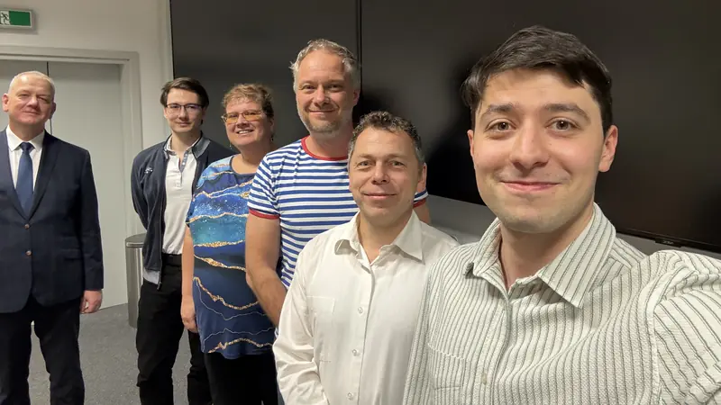

Joint workshop with Tomas Bata University in Zlín
On 18–19 November 2026 we hosted our partners from the Faculty of Applied Informatics, Tomas Bata University in Zlín (Zuzana Komínková Oplatková, Libor Pekař and Petr Chalupa) for a two-day joint workshop at AGH.

The goal was to agree on the problems we will work on within our partnership. We discussed optimization problems from control engineering that we plan to tackle together.
We are looking forward to the next steps of the collaboration!